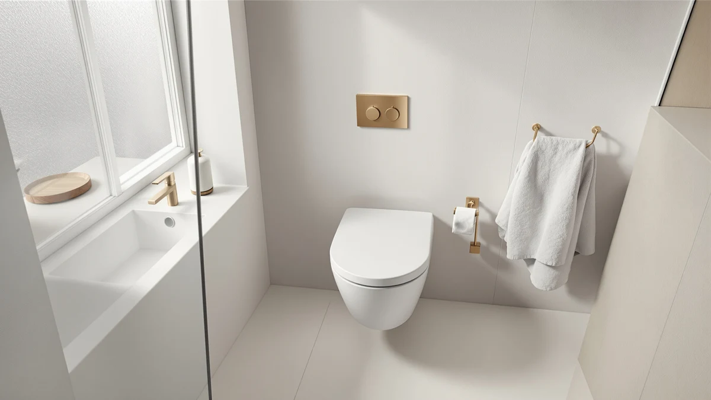

Swiss Madison SM 1T108 Review (2026): Worth It?
Prices and picks verified as of September 2026. Independent, reader-supported reviews.


Quick Answer
This Swiss Madison SM 1T108 review centers on a $277.73 one-piece toilet with a soft-closing seat and a 0.8/1.28 GPF dual flush, the priciest of the four models compared here. If you want a lower price and don't need the soft-close upgrade, the two DeerValley toilets below cost less, while the BayRoll One Piece Sleek Modern sits closest in price with its own ADA comfort-height seat.
Our pick: Swiss Madison SM-1T108 Monaco One — $277.73 Check Price on Amazon
Bottom line: our top pick is the Swiss Madison SM-1T108 Monaco One Piece Elongated Dual at $277.73.
Things to Know Before You Buy
- Swiss Madison prices the SM-1T108 Monaco One at $277.73, the most expensive of the four models in this Swiss Madison SM-1T108 review.
- The SM-1T108 pairs a dual-flush system rated at 0.8 and 1.28 gallons per flush with a soft-closing seat, a combination none of the three alternatives below fully match.
- The BayRoll One Piece Sleek Modern costs $249.00, the closest price to the Swiss Madison and the only alternative with its own ADA comfort-height seat.
- Both DeerValley toilets undercut the Swiss Madison by roughly $37 to $39, though neither ships with a soft-close seat.
This Swiss Madison SM 1T108 review looks at whether the $277.73 SM-1T108 Monaco One holds up against three lower-priced one-piece toilets from BayRoll and DeerValley already covered on this site. Swiss Madison builds the Monaco One as a seamless one-piece porcelain toilet with a dual-flush system rated at 0.8 and 1.28 gallons per flush, a soft-closing seat, and a 12-inch rough-in, aiming for a price point above its budget rivals here but well below premium bidet-equipped models. We pulled together Swiss Madison's own product listing, including the five images the brand publishes of the toilet from different angles, and set it beside the BayRoll One Piece Sleek Modern, the DeerValley Elongated One-Piece Toilet with ADA Chair Height Seat, and the DeerValley Elongated One Piece Toilet with dual flush, three models that compete in the same one-piece toilet category at a lower price.
The short version: if a soft-closing seat and Swiss Madison's dual-flush engineering matter to you, the SM-1T108 is worth a look, but it costs $28.73 more than the BayRoll One Piece Sleek Modern, the closest alternative in this comparison, and nearly $39 more than the cheaper of the two DeerValley toilets below. Pick the Swiss Madison if you want a soft-close seat built into a compact 12-inch rough-in footprint. Pick one of the three alternatives below if price matters more than that soft-close upgrade.
Why You Should Trust Us
Ilane Tall has spent more than ten years researching bathroom fixtures, including one-piece toilets and their flush mechanisms, for Best One Piece Toilets. She built this Swiss Madison SM-1T108 review by comparing Swiss Madison's own published listing against the closest competitors on price and category, the same side-by-side process the site uses for every review. We do not accept payment from Swiss Madison, BayRoll, or DeerValley to influence placement, and our Amazon links earn a commission only if you buy, which does not change what we recommend.
Our Research Experience
For this Swiss Madison SM-1T108 review, we started with Swiss Madison's own product listing: the five photos of the toilet from multiple angles, the dual-flush and soft-close specs, and the $277.73 price. We then lined up the SM-1T108 against every other one-piece toilet in a similar price band already covered on Best One Piece Toilets, narrowing the field to the BayRoll One Piece Sleek Modern, the DeerValley Elongated One-Piece Toilet with ADA Chair Height Seat, and the DeerValley Elongated One Piece Toilet with dual flush, three models that span a roughly $40 price range around the Swiss Madison. None of the four has built up a public review count on the listings we pulled, so we weighted our evaluation toward the facts we could verify: published price, flush specifications, seat design, and rough-in size, rather than guessing at long-term durability we cannot confirm firsthand. That gap is also why we lay out each toilet's documented specs side by side instead of ranking them on star counts that don't exist yet, and it's a limitation worth keeping in mind as you read the rest of this Swiss Madison SM-1T108 review.
Overview & Specs

Swiss Madison SM-1T108 Monaco One
What we like
- Pairs a soft-closing seat with a dual-flush system rated 0.8 and 1.28 gallons per flush, a combination none of the three alternatives below fully match
- Ships as a seamless one-piece porcelain build in glossy white, with an elongated comfort-height bowl at 15.5 inches
- Swiss Madison publishes five images of the toilet from different angles, giving you a fuller visual sense of the design before you buy
Flaws but not dealbreakers
- Priced $28.73 higher than the BayRoll One Piece Sleek Modern, the closest alternative in this Swiss Madison SM-1T108 review
- No public rating or review count on the listing we pulled, so you're relying on Swiss Madison's own description rather than verified buyer feedback
- Costs roughly $38 more than the cheaper DeerValley toilet below, without a documented MAP score to compare flush performance directly
| Material | — |
| Size | 12" Rough-In |
Swiss Madison builds the SM-1T108 Monaco One as a seamless one-piece porcelain toilet, skipping the seams and crevices that two-piece designs leave around the tank-to-bowl connection. The dual-flush system offers 0.8 gallons per flush for liquid waste and 1.28 gallons for solid waste, a spread aimed at cutting water use without sacrificing the stronger flush when you need it. That gravity-fed dual-flush engineering is the main reason to consider the SM-1T108 over the two DeerValley alternatives further down this Swiss Madison SM-1T108 review, since you also pay for a soft-closing seat that neither DeerValley model includes. Swiss Madison's listing includes five images of the toilet from different angles, giving you a closer look at the glossy white finish and the elongated comfort-height bowl than a single product photo would, and that level of documentation matters when you're comparing four toilets sight unseen.
At $277.73, the SM-1T108 is the priciest of the four toilets in this comparison. The BayRoll One Piece Sleek Modern comes closest at $249.00, undercutting the Swiss Madison by $28.73 while offering its own ADA comfort-height seat instead of a soft-close mechanism. The two DeerValley toilets, at $240.80 and $239.00, both trade the soft-close seat and the 12-inch rough-in for a lower price, with one of them adding an ADA-compliant seat height of its own. None of the four listings we pulled has built up a public review count yet, so the decision comes down to how much you value the soft-close seat and Swiss Madison's dual-flush spread against the price you'd pay to skip it.
What We Liked
The clearest advantage in this Swiss Madison SM-1T108 review is the soft-closing seat paired with a dual-flush system built for water efficiency. Instead of buying a one-piece toilet and then shopping separately for a soft-close seat upgrade, the SM-1T108 folds both into a single $277.73 unit with a seamless porcelain build, which sets it apart from the two DeerValley models in this comparison that ship with standard seats. Swiss Madison also documents the toilet with five images from different angles, more visual coverage than a bare product photo offers, and that helps you judge the glossy white finish and comfort-height bowl before you commit to buying. For buyers who have already decided they want a soft-close seat and dual-flush efficiency without stepping up to a bidet-equipped model, that combination is worth the premium Swiss Madison charges for it.
What Could Be Better
The biggest drawback in this Swiss Madison SM-1T108 review is price relative to the field. At $277.73, the SM-1T108 costs $28.73 more than the BayRoll One Piece Sleek Modern, the closest alternative, and roughly $38 more than the cheaper of the two DeerValley toilets. Swiss Madison also has not accumulated a public rating or review count on the listing we pulled, so we can't confirm long-term durability or real-world flush performance beyond what the brand's own product description states. That missing track record is worth factoring into your decision, especially since BayRoll's listing documents a 1000-gram MAP score that Swiss Madison's does not. If your bathroom doesn't strictly need a soft-close seat from this specific brand, that price gap is worth weighing against the cheaper alternatives below.
Who Is It For?
The Swiss Madison SM-1T108 fits buyers who have already decided they want a soft-closing seat and dual-flush efficiency and would rather buy both built into the toilet than add a seat separately later. Anyone remodeling a bathroom from scratch and willing to pay a modest premium for a seamless one-piece build and glossy white finish will find it a reasonable match too. Shopping mainly on price? The DeerValley Elongated One Piece Toilet in this Swiss Madison SM-1T108 review covers a similar dual-flush category for $38.73 less. And if an ADA comfort-height seat matters more to you than soft-close, the BayRoll One Piece Sleek Modern handles that for $28.73 less.
Alternatives to Consider
If the $277.73 price gives you pause, these three toilets cover similar or adjacent ground to the SM-1T108 for meaningfully less money, and each is worth a look in this Swiss Madison SM-1T108 review.

Editor’s Pick
BayRoll One Piece Sleek Modern
BayRoll's One Piece Sleek Modern undercuts the SM-1T108 by $28.73 at $249.00 and adds its own ADA comfort-height seat with a documented 1000-gram MAP score, a spec Swiss Madison's listing doesn't publish. It's the closest direct alternative to the Swiss Madison in this comparison if you want a fully skirted, easy-to-clean design without paying for the soft-close upgrade.
$249.00
Check Price on Amazon
Best Value
DeerValley Elongated One-Piece Toilet with
DeerValley prices its Elongated One-Piece Toilet with ADA Chair Height Seat at $240.80, over $36 less than the SM-1T108, and pairs a rimless bowl with a 1000-gram MAP score and a 17.5-inch ADA-compliant seat height. It won't match Swiss Madison's soft-close seat, but it's worth considering if accessibility and a lower price matter more than that upgrade.
$240.80
Check Price on Amazon
Premium Choice
DeerValley Elongated One Piece Toilet
The DeerValley Elongated One Piece Toilet rounds out this comparison at $239.00, the lowest price among the four models in this Swiss Madison SM-1T108 review, while still offering a fully skirted design and a dual-flush system rated 1.1 and 1.6 gallons per flush. It's the pick if price matters more to you than the soft-close seat Swiss Madison builds into the SM-1T108.
$239.00
Check Price on AmazonFrequently Asked Questions
Is the Swiss Madison SM-1T108 worth $277.73?
It's worth $277.73 if you specifically want a soft-closing seat built into a dual-flush one-piece toilet rather than adding a seat upgrade separately. If price matters more than that soft-close feature, the DeerValley Elongated One Piece Toilet in this Swiss Madison SM-1T108 review saves you $38.73 at $239.00.
How does the Swiss Madison SM-1T108 compare to the BayRoll One Piece Sleek Modern?
Both the Swiss Madison SM-1T108 and the BayRoll One Piece Sleek Modern are dual-flush one-piece toilets with a 12-inch rough-in, but the Swiss Madison adds a soft-close seat while BayRoll documents a 1000-gram MAP score and an ADA comfort-height seat instead. BayRoll costs $28.73 less at $249.00.
Do you need a soft-close seat like the Swiss Madison SM-1T108, or will a standard one-piece toilet work?
If a soft-closing seat that prevents slamming matters to you, the Swiss Madison SM-1T108 builds that in from the start. If you don't need that feature, the DeerValley Elongated One Piece Toilet in this Swiss Madison SM-1T108 review covers a standard dual-flush one-piece toilet for $239.00, well under the Swiss Madison's price.
Final Verdict
This Swiss Madison SM 1T108 review comes down to a straightforward trade-off. Swiss Madison's SM-1T108 delivers a soft-closing seat and a dual-flush system rated 0.8 and 1.28 gallons per flush, at $277.73, the highest price among the four models we compared, and without the public review history that would let us confirm long-term performance firsthand. If you want that soft-close seat and Swiss Madison's seamless one-piece build and price is not the deciding factor, the SM-1T108 is a reasonable buy at that price. If you'd rather save money or don't need the soft-close upgrade specifically, the BayRoll and DeerValley alternatives above are worth a look.